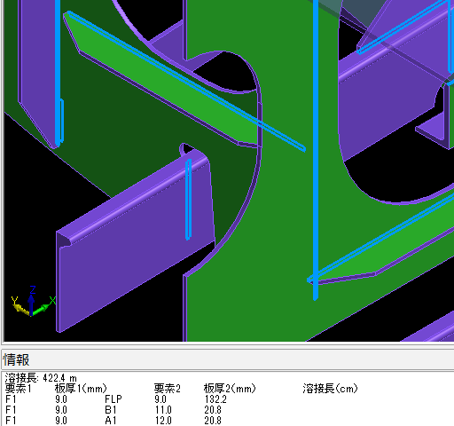
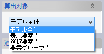
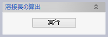
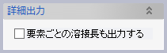
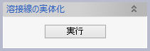

溶接長
ソリッドまたはシート要素間の溶接部を検出し、その長さを算出します。

操作方法
ソリッドまたはシート要素を選択してコマンドを実行すると、各要素間の溶接部の合計長が表示されます。 要素ごとの溶接長を表示することもできます。溶接線はプレビュー表示され、必要に応じて実体化できます。
パラメータ
- 算出対象

溶接長を算出する対象要素を選択します。
- モデル全体
モデルに含まれる全てのソリッドおよびシート要素を対象とします。
- 表示要素内
モデルに含まれるソリッドおよびシート要素のうち、表示がOnになっている要素を対象とします。
- 選択要素内
対象となるソリッドおよびシート要素を選択します。

- 要素グループ内
選択した要素グループに含まれる全てのソリッドおよびシート要素を対象とします。

- モデル全体
- 溶接長の算出

対象要素間の溶接部を検出し、情報ウィンドウに溶接長を表示します。また、ドキュメントウィンドウ内に溶接線をプレビュー表示します。
- 詳細出力

チェックした状態で溶接長を算出すると、溶接長の合計だけでなく、溶接される要素の一対ごとに
- 要素名
- 板厚（形鋼であればウェブの板厚）
- 溶接長
を情報ウィンドウに出力します。
- 溶接線の実体化

プレビュー表示された溶接線をカーブ要素として作成します。
「要素名」ダイアログと「要素グループ」ダイアログで、作成されるカーブの要素名と要素グループを指定できます。
- 溶接トレランス

モデル内で要素同士が離れていたり食い込んでいたりしても、フェイス間の距離が溶接トレランス値以下であれば溶接部分とみなされます。